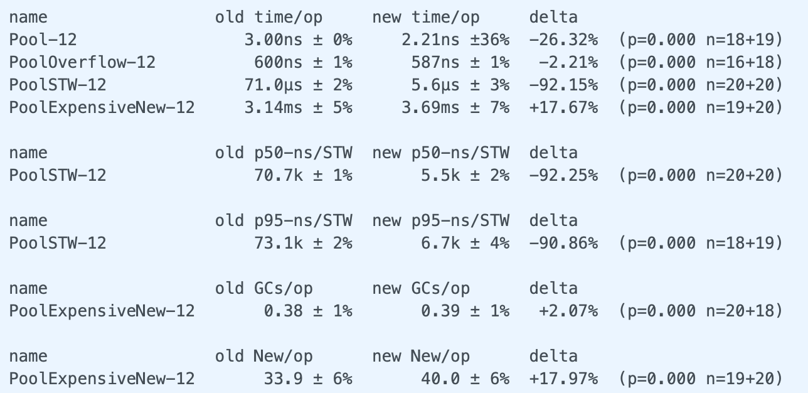

Go 1.13持续对 sync.Pool进行了改进，这里我们有两个简单的灵魂拷问：
1、做了哪些改进？
2、如何做的改进？
首先回答第一个问题：
- 对STW暂停时间做了优化, 避免大的sync.Pool严重影响STW时间
- 第二个优化是GC时入股对sync.Pool进行回收，不会一次将池化对象全部回收，这就避免了sync.Pool释放对象和重建对象导致的性能尖刺，造福于sync.Pool重度用户。
- 第三个就是对性能的优化。
对以上的改进主要是两次提交：: sync: use lock-free structure for Pool stealing和sync: use lock-free structure for Pool stealing。
两次提交都不同程度的对性能有所提升，依据不同的场景，提升0.7% ～ 92%不同。 Go开发者有一个很好的习惯，或者叫做约定，或者是他们的开发规范，对于标准库的修改都会执行性能的比较，代码的修改不应该带来性能的降低。这两次提交的注释文档都详细的介绍了性能的比较结果。
知道了第一个问题的答案可以让我们对sync.Pool有信心，在一些场景下可以考虑使用sync.Pool，以便减少对象的创建和回收对GC的影响。
了解第二个问题可以让我们学到Go开发者的优化手段，或许在我们自己的项目中也使用这些优化手段来优化我们自己的代码。
sync: use lock-free structure for Pool stealing
第一次提交提升用来提高sync.Pool的性能，减少STW时间。
Go 1.13之前，Pool使用一个Mutex保护的slice来存储每个shard的overflow对象。(sync.Pool使用shard方式存储池化对象，减少竞争。 每个P对应一个shard。如果需要创建多于一个池化对象，这些对象就叫做overflow)。
|
|
那么在Go 1.13中，使用是以 lock-free的数据结构代替slice + Mutex的方式：
|
|
这个lock-free的数据结构的实现很特别。
我们知道，实现lock-free的数据结构一般采用atomic的方式实现，通过CAS避免操作block住。sync.Pool也是采用这种方式，它定义了一个lock-free的双向链表:
|
|
poolDequeue是一个特别的队列，有以下特点：
- lock-free
- 固定大小，ring形结构(底层存储使用数组,使用两个指针标记ehead、tail)
- 单生产者
- 多消费者
- 生产者可以从head进行
pushHead、popHead - 消费者可以从tail进行
popTail
它的head和tail是采用一个uint64数值来表示的，好处就是我们可以通过atomic对这两个值整体进行CAS。它提供了unpack、pack可以从headTail中解析初独立的head和tail, 以及执行相反的操作。
数组存储在vals数组中，它采用interface的结构进行存储。
如果你看它的pushHead、popHead和popTail代码，可以看到它主要使用atomic来实现lock-free。lock-free代码比较简单，本文就不进行详细解读了，阅读的时候注意head和tail的边界问题。因为它是使用一个数组(准确的说是slice)实现一个ringbuffer的数据结构，这样能充分利用分配的空间。
sync.Pool还不是直接使用poolDequeue这样一个数据结构，原因在于poolDequeue是一个固定大小的队列，这个大小取什么值才合理呢？取的太小，以后可能不得不grow, 取的太大，又可能浪费。
解决这个问题就是采用动态增长的方式。它定义了一个队列链表池,可以实现动态的上述队列的增减:
|
|
一开始，它会使用长度为8的poolDequeue做存储，一旦这个队列满了，就会再创建一个长度为16的队列，以此类推，只要当前的队列满了，就会新创建一 2*n的poolDequeue做存储。如果当前的poolDequeue消费完，就会丢弃。
这样一个动态可变的lock-free队列正是sync.Pool所要的,当然为了CPU缓存优化还进行了缓存行的对齐：
|
|
Pool使用shard的方式实现池(local实际上是[P]poolLocal, 这里采用指针的方式)，它的Get、Put移除了Mutex的加锁控制，而是采用lock-free数据结构poolChain实现。
当然有人可能提出质疑: lock-free真的比Mutex性能好吗？在一定的竞争条件下，确实lock-free的性能要好于Mutex, 如果你举极端的例子，比如竞争非常激烈的情况，或许会有不同的结果，但是绝大部分情况下，lock-free性能还是要好一些。

注意Pool的实现中使用了runtime_procPin()方法，它可以将一个goroutine死死占用当前使用的P(P-M-G中的processor)，不允许其它goroutine/M抢占,这样它就可以自由的使用shard中和这个P相关的local，不必担心竞争的问题。释放pin的方法是runtime_procUnpin。
此时的poolCleanup (GC的时候对池化对象的释放)还是全部清空，进一步的优化在下一个提交中。
sync: smooth out Pool behavior over GC with a victim cache
上一节提到每次Pool清理的时候都是把所有的池化对象都释放掉，这会带来两个问题：
- 浪费: 池化对象全部释放后等需要的时候又不得不重新创建
- GC尖峰:突然释放大量的池化对象会导致GC耗时增加
所以这次提交引入了victim cache的机制。victim cache原是CPU硬件处理缓存的一种技术,
所谓受害者缓存（Victim Cache），是一个与直接匹配或低相联缓存并用的、容量很小的全相联缓存。当一个数据块被逐出缓存时，并不直接丢弃，而是暂先进入受害者缓存。如果受害者缓存已满，就替换掉其中一项。当进行缓存标签匹配时，在与索引指向标签匹配的同时，并行查看受害者缓存，如果在受害者缓存发现匹配，就将其此数据块与缓存中的不匹配数据块做交换，同时返回给处理器。
from wikipedia
相比较先前的直接清除Pool, 这次修改后是清除victim cache，然后将primary cache转移给victim cache。如果sync.Pool的获取释放速度稳定，那么就不会又新的池对象进行分配。如果获取的速度下降了，那么对象可能会在两个GC周期内被释放，而不是以前的一个GC周期。
同时，victim cache的设计也间接的提升GC的性能，因为稳定的sync.Pool使用导致池化的对象都是long-live的对象，而GC的主要对象是short-live的对象，所以会减少GC的执行。
相对于以前的实现，现在的sync.Pool的实现增加了victim相关的两个字段:
|
|
它主要影响两个方法的实现: getSlow和poolCleanup。
当前goroutine从自己的P对应的本地获取不到free的池化对象的话，就会调用getSlow, 尝试从其它shard中"偷取"。
如果不幸的是其它shard也没有free的池化对象的话，那么就就尝试从victim中找一个，寻找的方法和从本地中寻找是一样一样的。
找到的话就返回，找不到的话如果定义New创建函数，就创建一个，如果没定义New返回空。
清理的时候就是把每一个sync.Pool的victim都清空,然后再把本地local的池化对象赋值给victim， 本地对象都清空。
sync.Pool 整体 Get/Put 逻辑
Vincent Blanchon曾在他的Go: Understand the Design of Sync.Pool一文中给出了sync.Pool go 1.12版本的Get/Put的流程图。这里我画了一个go 1.13版本的流程图，可以很好的理解sync.Pool处理的过程。